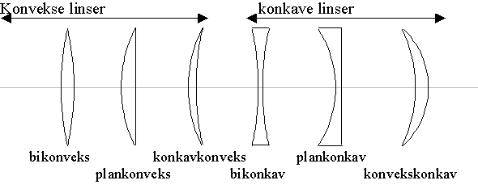
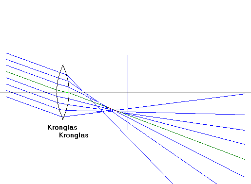
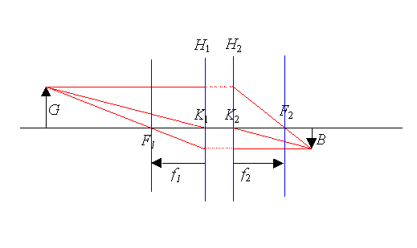
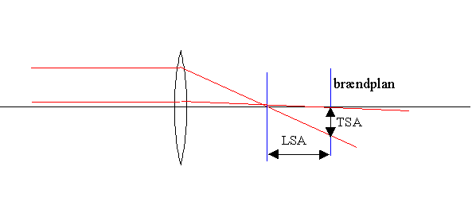
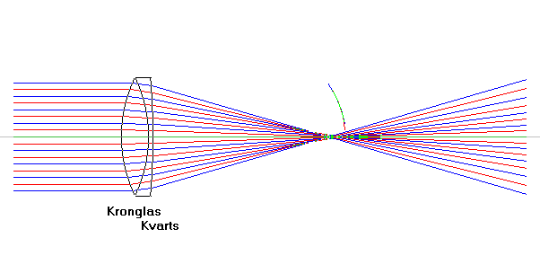
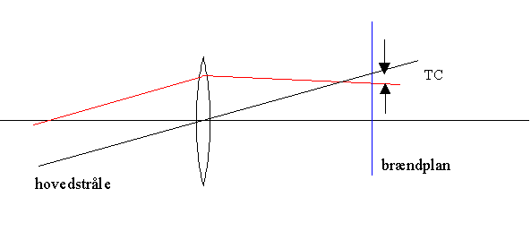

Se også brydning i en kugleflade.

En linse er et glaslegeme, hvor den ene eller begge overflader er en del af en kuglekalot. Hvis linsen er tykkest på midten er den konveks (af latin convexus, hvælvet dvs. en samlelinse) ellers er den konkav (spredelinse). Figuren herover viser forskellige typer linser.
Når lys samles efter at have passeret en linse dannes et virkeligt billede. Et termometer anbragt på billedets plads vil vise stigende temperatur. Et stykke papir kan gå i brand. Billedet kan projiceres på en skærm og billedet står på hovedet.
Når lys spredes efter at have passeret en linse dannes et indbildt billede. Det er opret og det kan ikke projiceres på en skærm. Bemærk, at en samlelinse godt kan sprede lyset, hvis genstanden er meget tæt på linsen!
Linsen

Dette billede viser et strålebundt af parallelt lys, som brydes i en konveks linse. Strålerne er tegnet korrekt. Den lodrette streg markerer brændvidden. Hovedstrålen, som er strålen gennem linsens centrum og tegnet med grøn farve.
I Gauss' afbildningsteori bestemmes de optiske egenskaber af et linsesystem af 2 brændpunkter og 2 knudepunkter på den optisk akse. Teorien er en god tilnærmelse for paraxiale stråler, dvs. stråler som danner en lille vinkel med den optiske akse, så sinus til vinklen kan approksimeres med vinklen: sin(v) » v.

Ifølge Gauss's teori gælder:
På figuren er billedet B af genstanden G tegnet ved at benytte følgende linseregler:
I simulationen kan man ændre linsens radius og dermed brændvidde, stoffet og dermed brydningsindekset, og strålernes retninger. Man kan også indsætte en blænde foran linsen. Man således iagttage forskellige linsefejl. Linsefejl benævnes også med aberration, der betyder afvigelse, forskydning. De vigtigste linsefejl er:
Sfærisk aberration
Denne fejl skyldes, at forskellige ringe af linsen har forskellige brændvidder. Linsens ydre dele samler lyset i kortere afstand end linsens midte. Den sfæriske aberration kan opdeles i longitudinal sfærisk aberration, LSA og transversal sfærisk aberration, TSA. Se figuren herunder:

LSA er afstanden fra brændplanet til strålens skæring med aksen. TSA er afstanden fra den optiske akse til strålen målt i brændplanet.
Fejlen kan afhjælpes ved at indsætte en blænde eller ved at vælge en plankonveks linse, men det er bedre at lave en kombineret linse. LSA kan simuleres i linsen og i linsesystemer.

Dette billede viser en simulation af linsen, hvor der er valgt dublet, dvs. en linse sammenkittet af en samlelinse og en spredelinse. Bemærk, at LSA er betydeligt mindre for denne linse end for en enkelt samlelinse (LSA er indtegnet som en bue, således at LSA kan aflæses som funktion af y). Desuden ser man, at de to farver har samme LSA.
Koma
Linsens ydre dele giver ikke samme billedstørrelse som dens midte, et punkt udenfor aksen får derfor et kometlignende udseende.

En linse uden sfærisk aberration, vil afbilde en uendelig fjern genstand i brændplanet. Men billedet bliver ikke skarpt, for en stråle der rammer linsens ydre dele brydes mere end hovedstrålen, som går gennem linsens centrum. Afstanden fra hovedstrålens skæringspunkt med brændplanet til den givne stråles skæringspunkt med brændplanet kaldes tangentiel koma, TC.
Astigmatisme
Lysstråler, der rammer linsen under en skrå vinkel vil brydes mere end lysstråler, der ligger mere parallelt med linsens optiske akse. Se simulationen.
Billedkrumning
Et plant objekt, der afbildes på en plan flade, således at det er skarpt i centrum bliver gradvist mere uskarpt mod kanterne. Skarpheden i en vis afstand fra centrum kan forbedres ved at forskyde billedplanen et stykke langs aksen.
Billedfortegning
På en plan flade afbildes rette linier som krumme, hvis de ikke har retning mod aksen. Vinklerne gengives heller ikke rigtigt. Disse fejl tiltager stærkt imod kanterne.
Kromatisk aberration
Forskellige farver har ikke samme brydningsindeks og dermed heller ikke samme brændvidde. Prøv, at vælge både rødt og blåt lyse.
Forskellige farver giver heller ikke et billede af samme størrelse. Et punkt uden for aksen bliver til en farvet streg.
Ved en akromatisk linse, forstås en linse uden farvespredning, en sådan kan sammensættes af en samlelinse og en spredelinse med hver sin farvespredning, se linsesystemer eller vælg dublet i simulation af linsen.
Se også hulspejl og parabol.